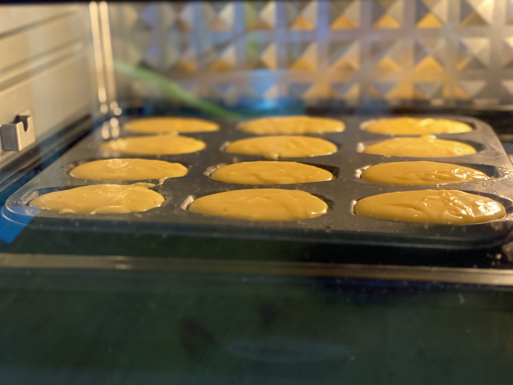
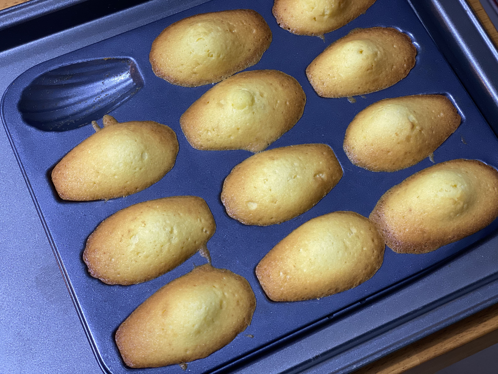

디저트 만들기
재료
- 박력분 150g,
- 버터 150g,
- 설탕 120g,
- 꿀 20g,
- 베이킹 파우더 3g (없으면 넣지 않아도 된다.),
- 바닐라 액스트라 혹은 바닐라 에센스 약간,
- 달걀 3개 (초란과 같이 달걀의 크기가 작은 경우 4개)
1. 버터 가열하기
버터를 가열할 때에는 처음에는 약한 불로 버터를 완전히 녹인뒤, 중불에 올려 1분 정도 끓여 수분을 날린다. 그리고 가열된 버터를 식혀준다. 뜨거운 상태에서는 반죽이 익어 버릴 수 있기 때문이다.
2. 달걀 풀기
설탕과 꿀을 넣기 전에 달걀을 풀어주어야 달걀이 잘 섞인다. 달걀을 거품기로 푸는 과정에서 바닐라 엑스트라를 넣어준다.
3. 설탕과 꿀 섞기
달걀이 어느정도 풀어지면 설탕과 꿀을 넣고 저어준다.
4. 혼합물 중탕하기
설탕을 완전히 녹여야 부드럽고 촉촉한 마들렌을 만들수 있기 때문에 물을 끓여 중탕해서 설탕을 완전히 녹인다. 이 과정에서 물이 너무 뜨겁지 않도록 해야 한다. 달걀이 익지 않도록 약 40도에서 50도 사이의 물로 중탕한다.

5. 가루재료 섞기
벅력분과 베이킹 파우더를 달걀 혼합물과 섞는다.
6.버터 섞기
식힌 버터를 반죽과 섞어준다. 이후 냉장고 냉장실에서 약 30분~1시간 정도 휴지시킨다.

7.마들렌 틀에 버터 칠하기
마들렌 틀에 녹인 버터를 발라 코딩해준다. 버터를 칠하지 않으면 마들렌이 틀에 붙어서 떨어지지 않는다.

8. 틀에 반죽 넣기
버터를 코팅한 마들렌 틀에 냉장고에서 휴지시킨 반죽을 수저로 떠서 부어준다. 약 80%가 차도록 붙는다.
9. 굽기
160도에서 170도 사이로 예열한 오분에서 약 10분에서 20분정도 구워주어야 한다. 간혹 오분에 종류에 따라 내부의 온도가 설정한 온도가 다른 경우가 있기 때문이다.
10. 틀에서 꺼내서 식히기
다 구워진 마들렌을 오분에서 꺼내자 마자 틀과 분리 시켜주어야 한다.
완성
기호에 따라 우유나 커피와 함께 즐기면 더 맛있는 마들렌. 위의 레시피는 기존에 있는 레시피를 계량하여 좀 더 덜 달게 만들었다. 다만 꿀과 설탕을 어떤 종류로 사용하느냐에 따라 향과 맛이 달라진다.